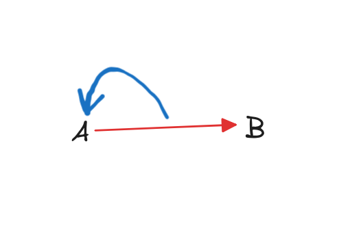
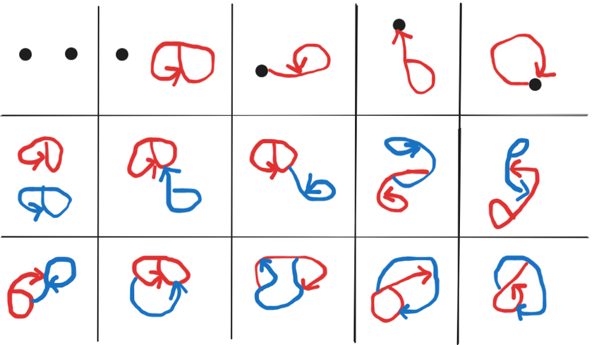

author: niplav, created: 2025-07-10, modified: 2025-08-22, language: english, status: in progress, importance: 3, confidence: likely
.
I am afflicted by a strange curse, which condemns me to be creative enough to find new mathematical structures, but too dumb to prove anything interesting about them.

On a meditation retreat in 2022 I was remembering a post by Scott Garrabrant and doodled the above image in my notebook, together with some other drawings of networks where edges can have edges as sources and sinks.
Recently, I got thinking about those again, researched a bit and think I've discovered they've not been examined yet. I'll call those kinds of graphs or networks "pergraphs".
Intuition 1: Intuitively, a pergraph is a mathematical structure consisting of nodes and edges (which I'll also equivalently call "peredges"), where each edge needs to have a source and a sink. The source and the sink of an edge can be any node or edge, including itself.
Definition 1: Given:
A pergraph is the tuple , where is a function that assigns each peredge a source and a sink.
Or, in Lean 4:
inductive PerNode (V E : Type) : Type
| vertex : V → PerNode V E
| edge : E → PerNode V E
structure Pergraph (V E : Type) where
e : E → PerNode V E × PerNode V E
Remark 1: A pergraph is more specifically a directed multi-pergraph, since peredges are directed, and two peredges can have the same source and the same sink. We will use the term "pergraph" for directed multi-pergraphs, and specify deviations from such.
Definition 2: A uni-pergraph is a pergraph with the additional constraint that no two peredges have the same source and the same sink, mathematically .
Unlabeled pergraphs are counted up to isomorphism for renamings of vertices and peredges.
One can count equence of pergraphs with constituents, starting at n=0:
1, 2, 15, 180, 3638, …
This sequence is not yet in the OEIS.

Code for computing the first terms of the sequence here, generated by Claude Sonnet 4, which I can also thank for talking through all the cases for n=2.
As a variant one could ditch the nodes entirely, and replace them self-sourced and self-sinked peredges. I think that one has different combinatorial behavior.
Pergraphs are more general than directed graphs (i.e. every directed graph is a pergraph), and less general than 2-categories.
{directed, undirected} edges×{allows, disallows} multi-edges×{allows, disallows} loops×{allows, disallows} hyperedges×{allows, disallows} edges between other edges×{allows, disallows} edges from/to themselves×{allows, disallows} edges between arbitrary sets of vertices.
Pergraphs are distinct from hypergraphs, as they don't allow for an edge between more than two nodes; they are not multigraphs, because they allow for edges from/to edges (similar to multigraphs, they allow for multiple edges between the same two nodes); they are distinct from higraphs, as they don't allow for edges to originate from collections of multiple nodes; they are different from Petri nets, because they don't have movable tokens; they are not the same as metagraphs, because they again allow for edges between (nested) collections of nodes. They are probably different from categories, because they're more specific than categories and don't require composition, but I don't know enough category theory to confirm that.
The closest I've found to this concept is in this unsourced section on the Wikipedia article on hypergraphs:
Alternately, edges can be allowed to point at other edges, irrespective of the requirement that the edges be ordered as directed, acyclic graphs. This allows graphs with edge-loops, which need not contain vertices at all. For example, consider the generalized hypergraph consisting of two edges and , and zero vertices, so that and . As this loop is infinitely recursive, sets that are the edges violate the axiom of foundation. In foundation](https://en.wikipedia.org/wiki/Axiom_of_Foundation). In particular, there is no transitive closure of set membership for such hypergraphs. Although such structures may seem strange at first, they can be readily understood by noting that the equivalent generalization of their Levi graph is no longer bipartite, but is rather just some general directed graph.
The generalized incidence matrix for such hypergraphs is, by definition, a square matrix, of a rank equal to the total number of vertices plus edges. Thus, for the above example, the incidence matrix is simply
The concept appears under-developed, and slightly different from what I'm pointing at.
Many thanks to Claude 4 Sonnet and Claude 4 Opus for several long conversations which fleshed out the concept, help with learning Lean, and help with writing the Rust code for the enumeration.